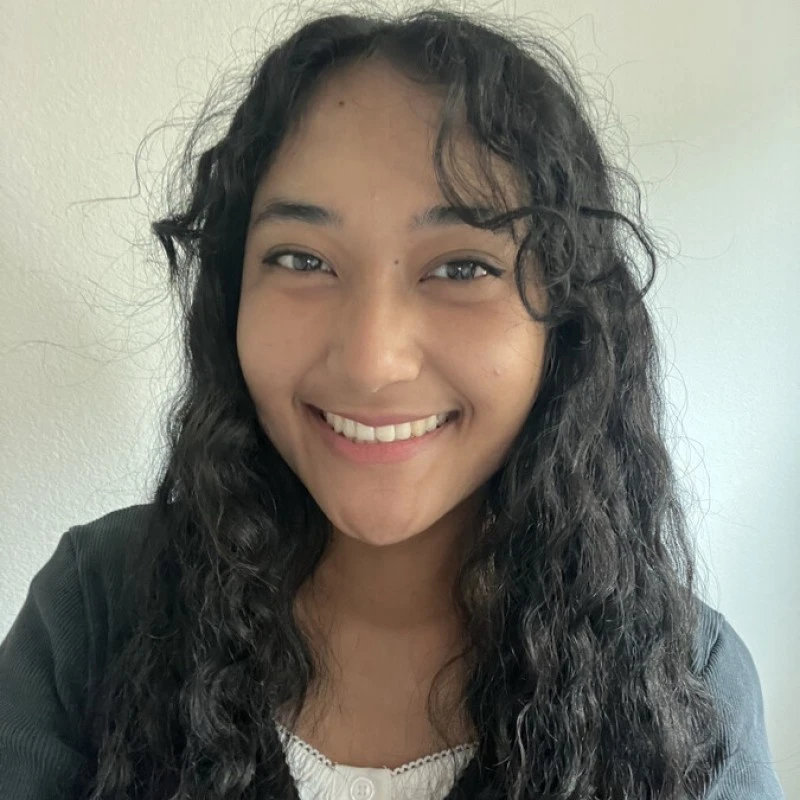
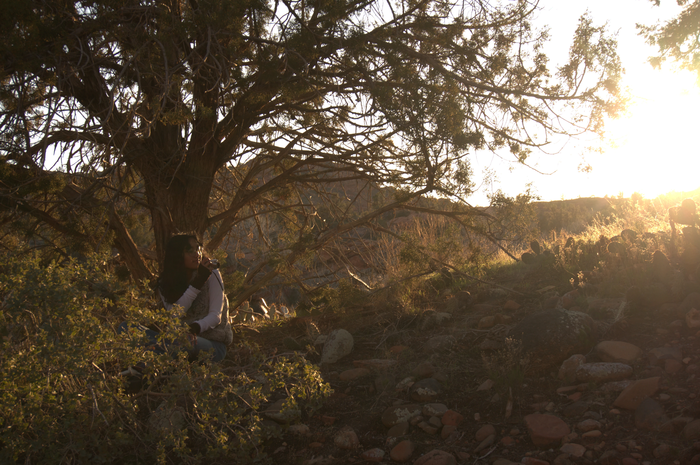
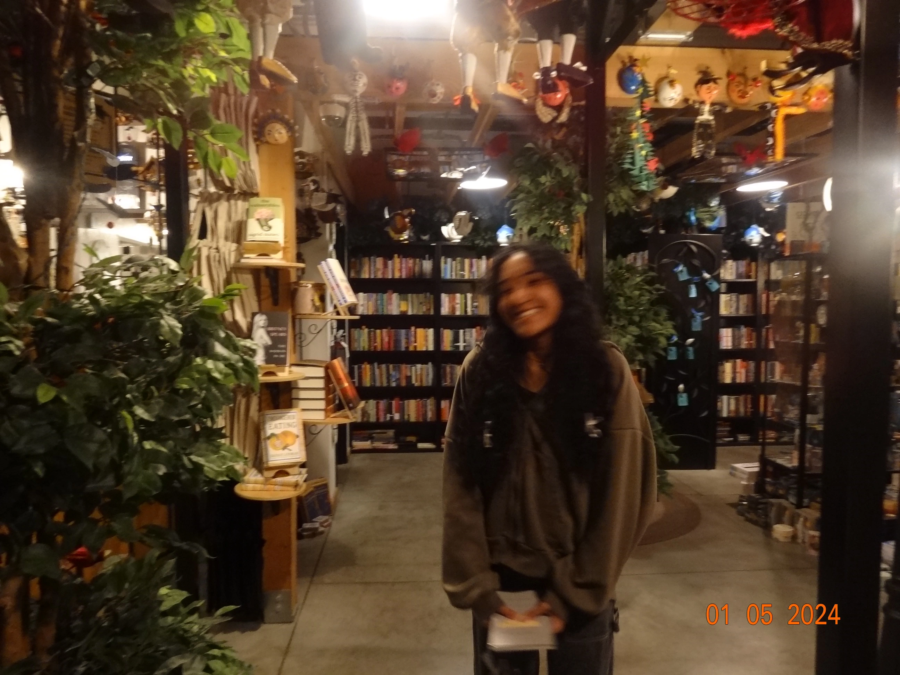

Hi! I'm Kayzelle, you can also call me Ked! I am a passionate engineering student at the University of Nevada, Las Vegas pursuing a
Bachelor of Science in Entertainment Engineering and Design. In the semesters I've spent so far studying at UNLV, I've created many
projects I am proud of that I'd love to share with the world, so thank you so much for visiting my portfolio!
My current interests lie in live entertainment and scenic design, and my ultimate goal in life is to bring joy to my community!
My decision to become an entertainment engineer comes from my love for art and technology.
Since I was a child, art has been my passion.
Hobbies like drawing, painting, sculpting, and embroidery come like second nature to me.
I'm constantly inspired to take on new hobbies, especially when I see someone bring a cool idea to life!
In high school, I found a passion for coding and technology in the three years that I took C++, Java, and web development classes.
I quickly realized that art and technology are not that different from each other.
I could use both as forms of expression to create something from nothing; the possibilities were endless.
I look forward to expanding and diversifying my skill set through new hobbies and opportunities!
Outside of school, I love to endulge myself in various forms of art, music, and technology!
My full list of hobbies is extensive, but my current favorites would be playing guitar,
taking pictures on my digital camera, drawing,
reading, and playing cozy video games.

